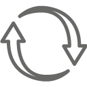
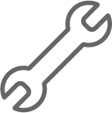
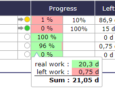

Today (Dashboard)¶
Today screen’s Global view¶
This screen allows the user to have an overview of the projects and tasks he is working on.
His projects, the tasks to which the user is assigned, those for which he is responsible as well as the various tasks created by himself or for which he is a requestor are listed in different sections.
Each list can therefore contain different types of tasks. The user can therefore view activities, questions, decisions, tickets, risks, meetings, milestones, … as well as financial elements, such as quotes, invoices or contracts.
It’s the User parameter “First page” by default
This parameter defines the screen that will be displayed first on each connection.
The definition of visibility is based on the access rights of each user
Automatic refresh
Allows to refresh data according defined delay.
Also the screen will be scrolling from top to bottom according defined delay.
Click on  to enable/disable automatic refresh.
Click on
 to print Today screen.
to print Today screen.
Parameters
Click on  to access screen parameters.
Activity Stream
You have access to the activity stream of the elements that you see displayed in accordance with the rights of your profile.
Click on
 to display current information related to your rights
to display current information related to your rights
Period for task selection
Allows to define the period for tasks will be displayed.
Due date
Select only items with due date less than today plus this selected period.
Or not set
Select also items with due date not set.
Refresh parameters
Allows to define parameters for automatic refresh.
Field Refresh delay
Selects the delay between two screen refresh.
Field Scroll delay
Selects the delay between two scrolling.
Items to be displayed
Allows to define sections displayed on the screen.
Allows to reorder sections displayed with drag & drop feature.
Using the selector area button icon drag
 .
.
The number of items to display for the user can be customized in the user parameters, in the display tab.
Enter the number of projects or tasks to appear on the screen.
See: User parameters
If you have added any reports to the Today page, they will appear in the list.
You can hide the added reports by clicking on the box.
See: Favorite Report
See: Today Screen Report
See: Extending
Projects¶
A quick overview of projects status.
The projects list is limited to the project visibility scope of the connected user.
The number of displayed projects can be defined in the global parameters.
Project section¶
Interface areas


{kind=link}
{kind=link}
The list of projects is limited to the extent of visibility of the logged in user.
All the projects to which you are assigned will therefore be displayed in this list
 Scope of the numbers counted
Scope of the numbers counted
Checkboxes allow to filter displayed projects
To do: Projects to do.
Not closed: Projects to do and done.
All: Projects to do, done and closed.
Projects name
Click on the name of a project will directly move to it.
{kind=link}
Manual indicator can be set on project.
Trend and health status indicators are displayed.
This icon allows to display the trend of the project.
{kind=link}
This icon allows to display the health status of the project.
 Calculated and overall progress
Calculated and overall progress
Actual progress of the work of project and additional progress manually selected for the project
On mouse over the bar
 Calculated progress¶
On each project shows part of “to do” (red) compared to “done and closed” (green).
 Other measure of progress
Other measure of progress
Left: Left work for the project.
Margin: Work margin.
End date: Planified end date of the project.
Late: Number of late days in project.
 Elements concerned to project
Elements concerned to project
Numbers of elements concerned to a project are displayed.
Tasks¶
Here are listed all the items for which the connected user is either “assigned to”, “responsible of”, “issuer or requestor of”.
Click on an item will directly move to it.
Note
Max items to display Parameter
Number of items listed here are limited to a value defined in Global parameters.
Field |
Description |
|---|---|
Unique Id for the item. Id column displayed unique Id and specific icon for the item |
|
Project |
The project concerned by the item. |
Type |
Type of item. |
Name |
Name of the item. |
Due date |
Planned end date or due date. |
Status |
Actual status of the item. |
Issuer |
Flag on indicate the user is the issuer for the item. |
Resp. |
Flag on indicate the user is the responsible for the item. |
Extending¶
Reports¶
You can select any report to be displayed on the Today screen.
Add selected report
To do this, just go to the selected report, select parameters and display result (to check it is what you wish on today screen).
Click on
 to insert this report with parameter on the Today screen.
to insert this report with parameter on the Today screen.Any unchanged parameter will be set as default value.
These reports will be displayed on Today screen like other pre-defined parts.
Click on to set the location of the report (s) on the Today screen.
Click on the handles to move the item in the list
You can reorder like any other parts.
Click on
 to completely remove them from the list.
to completely remove them from the list.
Display parameters on today¶
item to approve¶
You can define approvers for a document, incoming or outgoing mail.
Only users assigned to the project linked to the item to be approved can be added.
If you are in the list of approvers, you will see the list of items you need to approve.
The list of items is clickable.
See: Approval process
Todo list¶
You have the possibility to display the list of tasks for which you are responsible on the Today screen.
if you have activated the Follow-up module and its corresponding sub-module.
See: module management
The list offers to display unfinished to-do list items (line status is in progress) assigned to you.
Each to-do list item is clickable, taking you to the item screen, project, activity and todo list line with focus on the to-do list section and the appropriate line.
Todo list section¶